Установка git в Windows
Всем привет! Сегодня мы будем устанавливать Git в Windows. И любая работа с программой начинается с ее установки, иногда это не составляет сложности и достаточно только нажимать кнопку Далее. С git тоже можно использовать эту стратегию, хотя лучше сразу выбрать и настроить нужные параметры еще на этапе установки.
- 💡 Git - это консольная утилита для контроля истории изменения файлов в вашем проекте. Создана в апреле 2005 года Линусом Торвальдсом для отслеживания и управления изменениями в кодовой базы ядра Linux. В настоящее время подавляющее большинство проектов использует именно git для командной разработке и хранения истории кода.
Скачивание дистрибутива
Установка начинается со скачивания дистрибутива.
Открывайте ваш любимый браузер и переходите на официальный сайт проекта git:
Нажимайте Download, и у вас начнется скачиваться инсталлятор. Долго ждать не придется - размер не более 50мб.
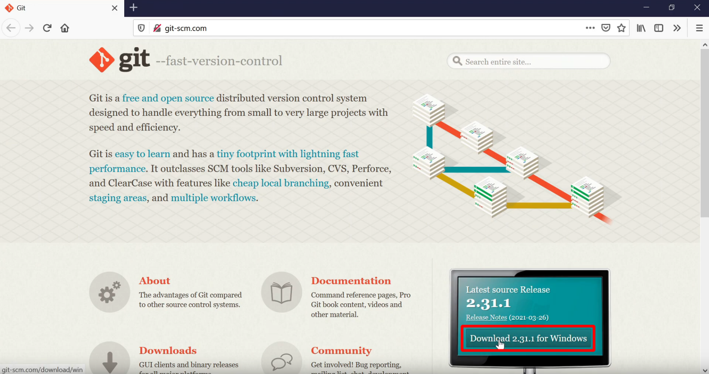
Установка
Рассмотрим все пункты установки.
Лицензионное соглашение
Первым делом нам предлагают принять лицензионное соглашение - принимаем нажимая Next
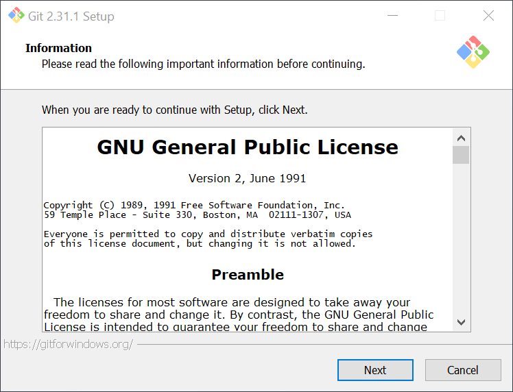
Выбор места для файлов git
Далее будет предложено выбрать место куда будет установлены файлы git, менять не требуется, Program Files нас устроит.
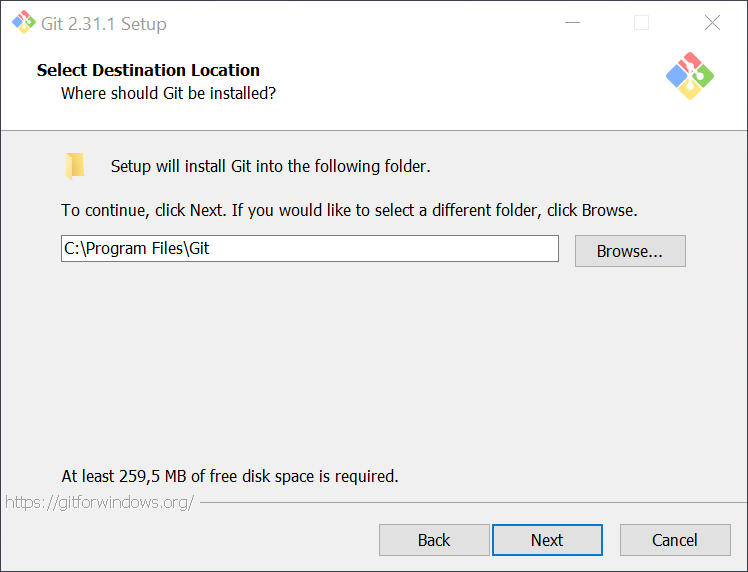
Выбор компонентов
На данном этапе нам будет предложено выбрать настройки и компоненты git:
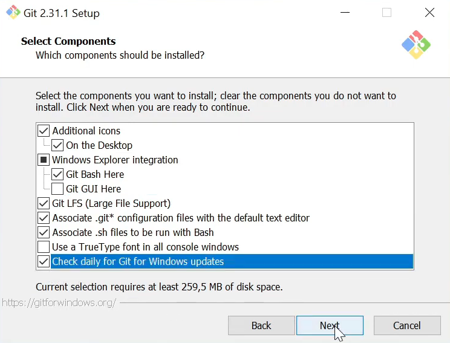
-
Additional icons - Выберите этот пункт, если нужна иконка запуска git bash на рабочем столе
-
Windows Explore integration - Выбранные пункты появятся в контекстном меню Проводника:
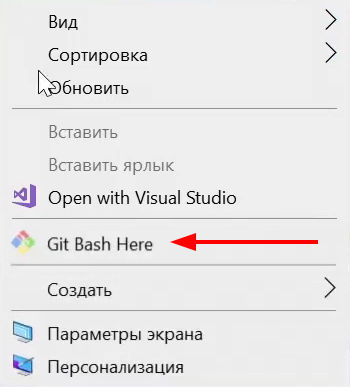
-
Associate .git configuration files with the default text editor -* если выбрать, то файлы .git* будут открываться в текстовом редакторе установленном в гите по умолчанию
-
Associate .sh files to be run with Bash - если выбрать, то файлы .sh* будут автоматически открываться в Git Bash
-
Use a TrueType font in all console windows - если выбрать, то в консоли Git Bash будет использоваться шрифт TrueType.
-
Check daily for Git for Windows updates - git будет проверять обновления ежедневно.
💡Предлагается выбрать набор компонентов, как указано на скриншоте.
Папка в меню Пуск
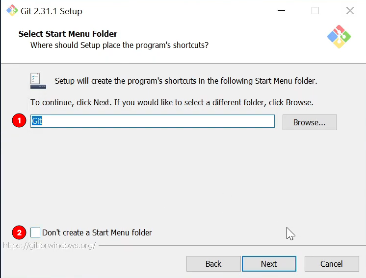
1 - Выберите как будет называться папка с ярлыками Git программ в меню Пуск
2 - Если выбрать пункт, то в меню Пуск папка не будет создана.
Редактор по умолчанию
Выбор редактора по умолчанию:
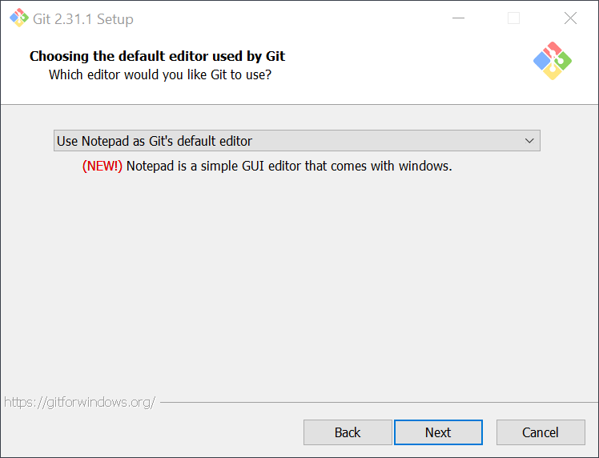
Рекомендуется поменять редактор Vim на редактора из списка который у вас уже установлен в системе. В любом случае вы можете выбрать стандартный блокнот Windows (Notepad) как редактор по умолчанию для написания комментариев, например к коммитам.
Если у вас уже установлен Sublime/Notepad++/Atom/VSCode - можете выбрать из списка и продолжайте установку.
Выбор ветки по умолчанию
С 2020 сервисы Github и Gitlab начали двигаться в сторону изменения ветки по умолчанию с master на main. Так и появился этот пункт установки.
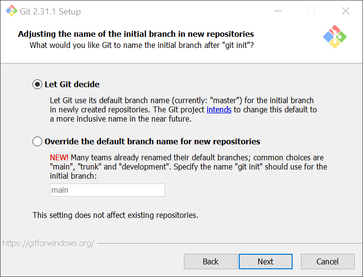
Выбранный первый пункт будет создавать новый репозиторий с основной веткой master, также выбрав второй пункт можно задать свое имя, например main. Название ветки не имеет влияния на функциональность репозитория, поэтому можно пойти по пути крупных сервисов и выбрать main для основной ветки.
Переменная окружения PATH
Настройка переменной окружения PATH:
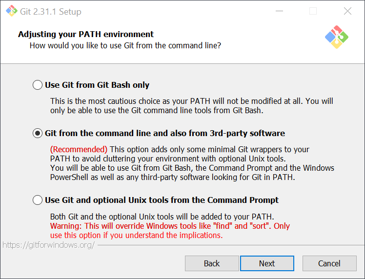
Установка предлагает выбрать, добавлять путь до гит в переменную окружения PATH, если выберем первый пункт, то переменная окружения PATH не будет изменена, а значит среды разработки не увидят установленный git в системе. Поэтому, как и рекомендует установка - выбираем второй пункт и путь до исполняемого файла будет добавлено в переменную PATH.
Библиотека для HTTPS
Выбор программы для работы с HTTPS соединений.

Выбираем первый пункт, а второй требуется только тогда, планируется использовать Active Directory - проверка сертификатов сервера библиотеками Windows.
Стратегия работы с переносами строк
Выбор переноса строк
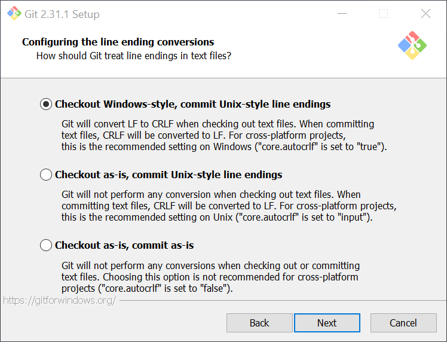
Так как в Windows и Linux/macOs используется разные переносы строк. В Windows \r\n (CRLF), а в Linux/macOS это Unix стиль - \n (LF).
Необходимо выбрать, какой подход использовать:
- Checkout Windows-style, commit Unix-style line ending - при коммите все windows переносы будут преобразованы в Unix (
CRLF→LF), и наоборот при получении новых коммитов или клонировании репозитория - обратное преобразование (LF→CRLF). Рекомендуется в большинстве случаев.
💡 При этом вы можете получать предупреждения, что переносы строки были преобразованы, это как раз информирование о замене переносов и нормально.
-
Checkout as-is, commit Unix-style line ending - при коммите
CRLFбудет конвертироваться вLF. При работе с файлами, переносы не будут изменены. -
Checkout as-is, commit as-is - никакое работы с переносами гит проводить не будет, будет коммитить файлы без изменений. (Не рекомендуется, так как часть файлом может быть
CRLF, а часть сLFпереносами.)
Выбор стратегии git pull
Нам предлагают выбрать стратегию работы команды git pull, получение обновления с удаленного сервера. Первый пункт предлагаемый по умолчанию будет всегда пробовать обновить локальную историю коммитов без создания коммитов слияния в отсутствии конфликтов. Его и выбирайте.
Настройка хранилища учетных записей
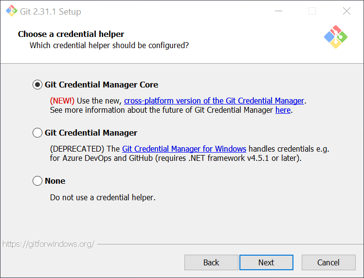
-
Git Credential Manager Core - если мы планируем использовать https доступ к удаленным репозиториям, то есть вводить свои логин и пароль от своего аккаунта на гитлаб или гитхаб - выбираем первый пункт и тогда ввести логин и пароль потребуется только один раз, после учетные данные будут записаны в хранилище и использоваться при подключении автоматически. Используется хранилище учетных записей Windows.
-
Git Credential Manager - помечен как deprecated, то есть устаревший. Он оставлен для совместимости. Не выбирайте его.
-
None - не использует хранилище учетных записей вовсе, и придется вводить логин и пароль каждый раз когда будете соединяться с удаленным репозиторием. Выбирать следует только в том случае если планируете использовать только SSH ключ для аутентификации.
Рекомендуется выбрать первый пункт, он не ограничивает использование ssh ключей, и при этом будет сохранять ваши учетные записи при использовании https доступа.
Extra
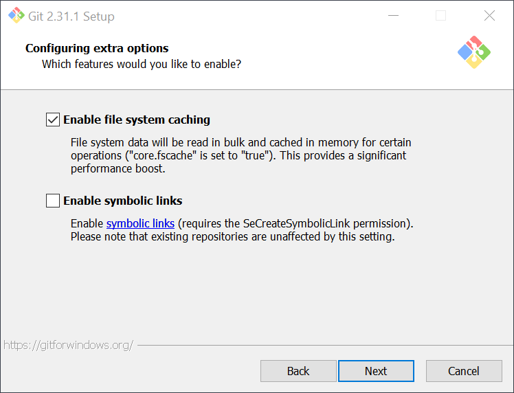
-
Enable file system caching - кэширование файлов
-
Enable symbolic links - использование символьных ссылок, когда потребуется - включите.
Экспериментальные возможности
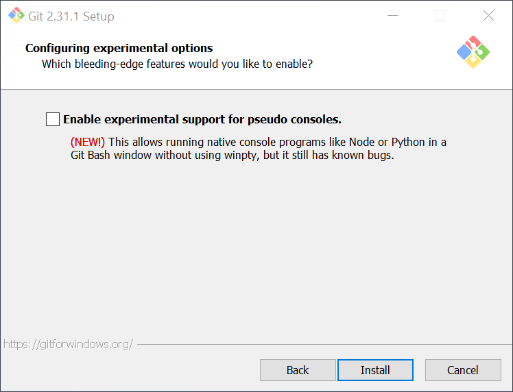
При первой установки не рекомендуется включать экспериментальные возможности, при необходимости можно их активировать позже.
Копирование файлов
Нажимаем Install и запустится процесс установки.
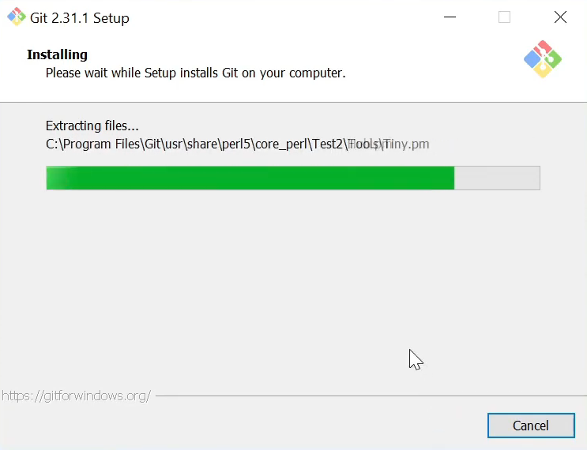
После установки снимем галочку с просмотра замечаний к версии git, и установим галочку Запустить Git Bash после установки, нажимаем Finish.
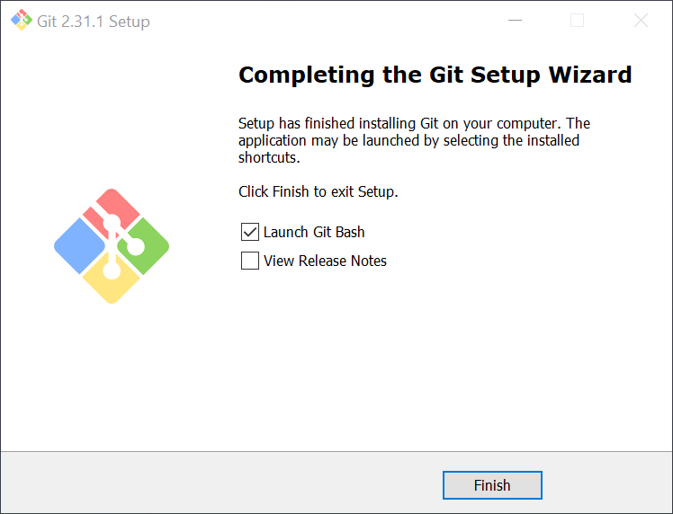
Обязательная настройка после установки
Каждый коммит в git обязательно подписывается именем автора коммита и его электронным адресом. Для установки выполните две команды, в каждой из которых замените строки в кавычках на свои электронный адрес и имя.
git config --global user.email "you@example.com"
git config --global user.name "Your Name"
Пример использования команды:
git config --global user.email "konstantin@shibkov.ru"
git config --global user.name "Konstatin Shibkov"
Чтобы проверить какой пользователь или email уже записаны в git, выполните команду без параметра в кавычках, например:
git config --global user.email
git config --global user.name
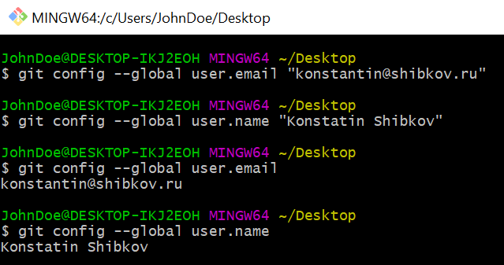
Если вы ошиблись при вводе, вы можете заново ввести команду и значения будут заменены
Базовая настройка git на этом завершена.
Пользуйтесь git с удовольствием!